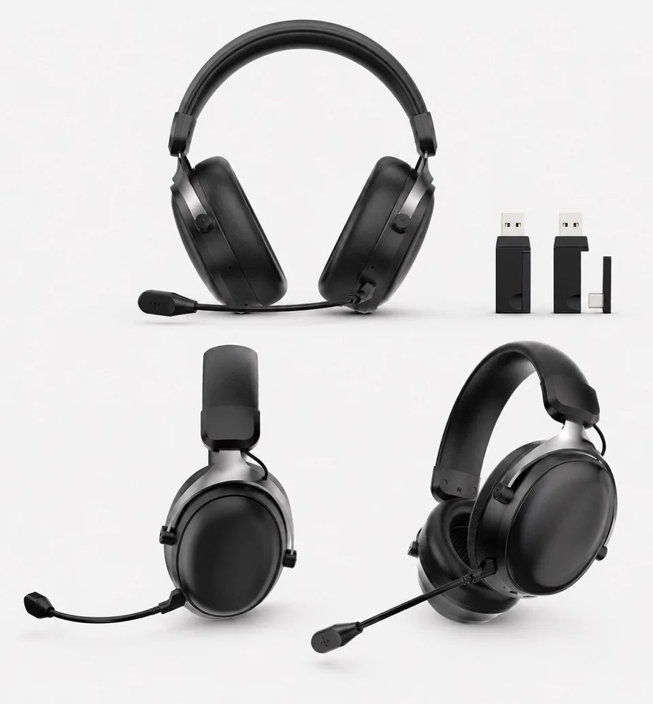

2.4GHz vs Bluetooth: which connection do you need?
Compare receiver use and direct pairing. Check game audio with the microphone on, phone calls and mode switching on your target device.

Gaming headset buyer questions
Not sure which connection to choose, why teammates hear your keyboard, or what a private-label quote includes? Find the answer, compare the sample and keep the checklist for your buying team.

Free buyer worksheets
Prepare your supplier questions, compare what offers include and keep device settings with your sample notes. These are blank English worksheets, not quotations, test reports or approvals. No email is needed.
Share the blank sheets with your buying team. When referring to a checklist in an article, link to its instructions above so readers can see the method and its limits.
Connections
Start with the device and the audio path. A connector that fits is not proof that playback and voice chat will both work.
Compare receiver use and direct pairing. Check game audio with the microphone on, phone calls and mode switching on your target device.
Check the matching receiver, port and adapter, then record playback, microphone and reconnection on the selected sample.
USB may only power the lights. See which plug carries audio and when a PC may need a separate microphone splitter.
Compare the cable, charging and connection requirements before choosing a product direction for your customers.
Voice and fit
Separate what you hear, what your team hears and how the headset feels. Compare those questions on the actual sample.
Understand wearer-side and microphone-side noise reduction before reviewing a feature claim or demonstration.
Use the same English recording passage for each sample. Compare keyboard and fan noise, natural speech and app processing settings.
Separate the contact surface from the filling. Review fit, heat observations, glasses and the audio seal without assuming the material proves comfort.
Private-label sourcing
Compare the same order scope before comparing prices. Review the logo and packaging discussion after choosing a model.
Ask about the model version, MOQ, branding, accessories, packaging, sample terms and delivery scope. Do not assume every quote covers the same items.
Start with company responsibility, model evidence, a traceable sample and the documents needed for your destination market.
Keep customization scope, sample review, packaging questions and quotation requirements comparable across suppliers.
Separate included, optional and unconfirmed receivers, cables, microphones and printed materials before approving a packing list.
Open the original CE/RED and RoHS references. Check the named company, model list, dates and scope rather than relying on a certificate thumbnail.
Sample approval
Keep observations with the sample version, settings and unresolved questions. A worksheet is not a completed test or an approval.
Check game audio and voice together, reconnection, fit and the agreed accessories. Download the blank review sheet without giving your email.
Use workshop process references to prepare questions about assembly, functional checks, charging, cables and packaging.
Connect the reviewed sample with its assembly, charging, cable and packing questions before agreeing the next step.
Match model pages, receiver and microphone detail, accessories and workshop references to the claim you need to confirm.
Model selection
Shortlist a product role, then check the version. Browse the gaming headset range for other wired and wireless directions.
Compare documented driver sizes, connection modes, microphones and accessories before choosing which sample to review first.
Compare tri-mode use with a receiver-based dual-driver direction. Confirm the selected version rather than inferring features from the model code.
Use the supplied black-red and white product images to discuss color, receiver, microphone and logo placement.
Other audio ranges
Review fit, call use and packaging for a separate TWS or open-ear product range.
Compare TWS044F and Earclip09S by wearing style, channel, leakage, calls and packaging before choosing a sample.
Review the wearing style, charging case, call-use expectations, branding and packing needs together.
Check earclip fit, leakage, calls, battery, charging case, colors and the selected packing list.
Product videos
Short demonstrations are published on the official TALRIVO YouTube channel. Keep the complete specifications, buyer questions and sourcing context on the related website page.
Watch the embedded official G936 video, then use the receiver, audio and microphone checklist before approving a target-device sample route.
See headband preparation, bracket fitting, earcup assembly and hand finishing in G935 workshop footage. Check what the video shows and what still needs confirming on your own sample.
Watch receiver insertion, phone settings and controls on a physical sample. Bluetooth settings are shown, but completed pairing is not clearly visible; the clip is not a universal compatibility test.
Watch the official G938 product film on YouTube, then use the model page for documented specifications, sample questions and inquiry details.
Watch the published G935 video on YouTube, then use the model page for documented specifications, sample questions and inquiry details.
Watch the official G936 material comparison on YouTube, then review the matching product page and buyer checklist.
Watch the official 27-second G941 product showcase on YouTube, then use the product page for model details, images, buyer questions and sample discussion.
Watch the official ENC microphone demonstration on YouTube, then review the product page before making model-specific claims or sample decisions.
Share the target market, sales channel, selected model or category direction, quantity range, sample timing and the product evidence or documents you need to review.